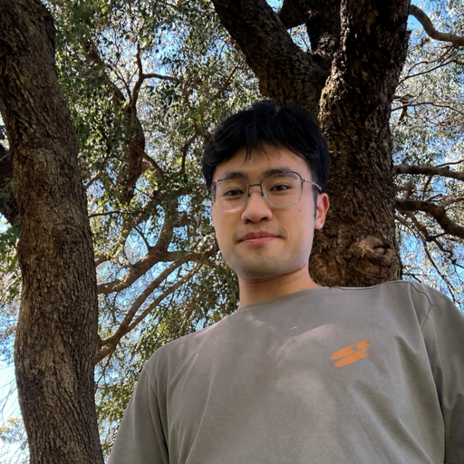
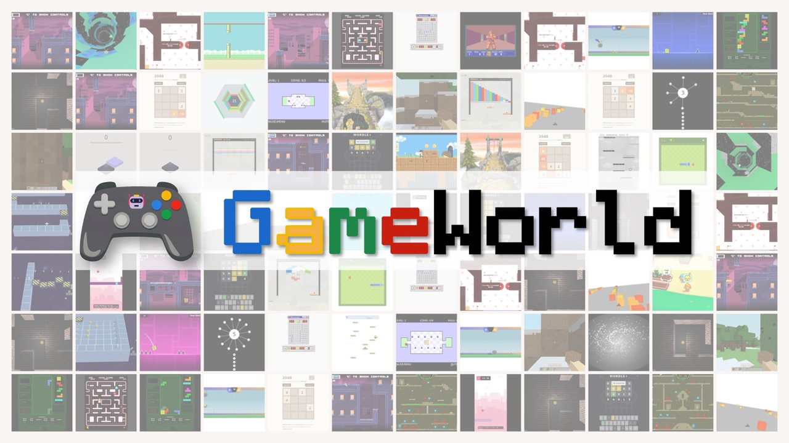
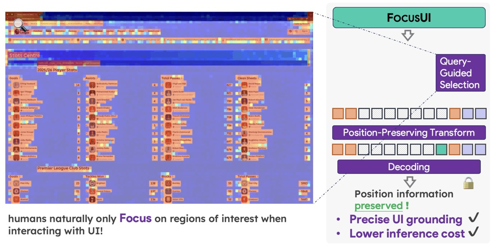
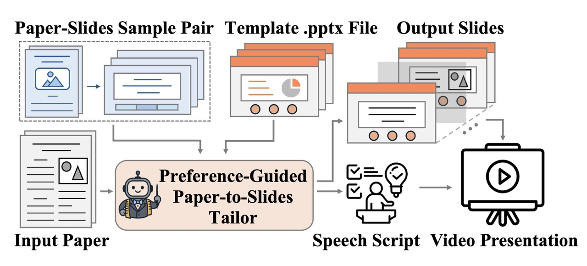
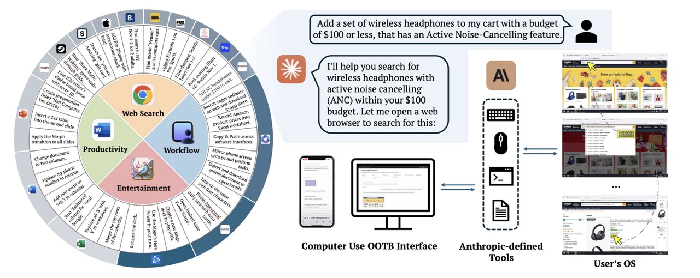
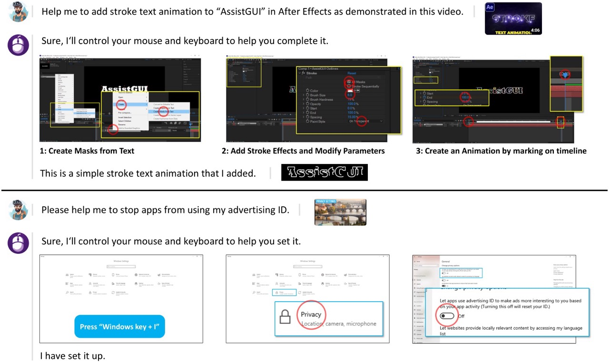
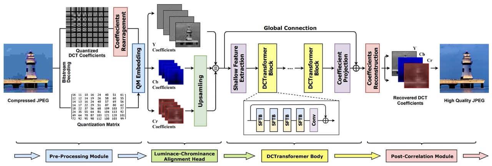

Ph.D. Student in Computer Science, National University of Singapore
|

| CV |
Email |
Google Scholar |
|
I am a second-year Ph.D. student in Computer Science at the National University of Singapore, supervised by Prof. Hwee Tou Ng and Prof. Mike Zheng Shou. I completed my Master's in Data Science and Machine Learning at NUS, and obtained my Bachelor's degree from Wuhan University. I am with ShowLab on multimodal and GUI agent research. During my undergraduate years I worked with IIP Lab under the supervision of Prof. Zhenzhong Chen. I previously interned at SenseTime Research Singapore and Tencent. I am interested in the interaction and the productivity brought by multimodal digital agents. I built computer-use/GUI agents, with recent work focusing on the UI perception and grounding. Currently I work on game agents, as games offer an ideal environment with rich visual observations, long-horizon goals, and real-time interaction. The improvement on fine-grained perception, planning, and precise control will benefit the future embodiment of digitial agents. Previously, I worked on low-level vision training on-device models for camera and phone modules. I was experienced with AI image signal processing (AI-ISP), image compression and restoration. [Opportunity Note] I am currently looking for research internship working on multimodal agents (including computer-use, game, etc) starting summer 2026. Feel free to contact me! Email: yyyangwhu@gmail.com |
|
|
TR '26
 |
paper | project page | code Standardizes multimodal game-agent evaluation across 34 browser games and 170 tasks with paused sandbox execution, dual agent interfaces, and deterministic state-verifiable scoring. |
|
CVPR '26
 |
paper | project page | github | dataset Selects instruction-relevant UI tokens while preserving positional continuity, improving grounding accuracy and efficiency under aggressive token reduction. |
|
AAAI '26
 |
Generates user-aligned editable slides from papers using example-based preference conditioning, visual templates, and a chain-of-speech planning mechanism. |
|
arXiv '24
 |
paper | project page | github Github 1.9k stars. An out-of-the-box framework for desktop GUI agents, supporting both Windows and macOS. |
|
CVPR '24
 |
A Windows GUI agent framework for task decomposition, GUI parsing, action generation, and reflection. |
|
TIP '24
 |
Introduces DCTransformer to recover JPEG-quantized DCT coefficients with joint spatial-frequency modeling across varied compression quality factors. |
| Aug. 2023 - Present | National University of Singapore Ph.D. in Computer Science |
| Aug. 2023 - Dec. 2025 | National University of Singapore M.Sc. in Data Science and Machine Learning |
| Sep. 2019 - Jul. 2023 | Wuhan University B.Sc. in Geospatial Informatics and Digitalized Technology. First-class Undergraduate Scholarship. |
| Mar. 2025 - Oct. 2025 | UseIt AI Co-founded a startup focusing on creating, editing, and deploying personal agents. Led GUI agent development and agent workflow orchestration. |
| Dec. 2023 - Oct. 2025 | SenseTime Research Singapore Developed efficient low-level deep learning models for RAW image processing, including noise synthesis and learned ISP modules for camera and phone systems. |
| Mar. 2022 - Oct. 2022 | Tencent Technology Implemented GPS data processing on Hadoop and Spark, and maintained an internal service handling over 10 billion callbacks per hour. |
|